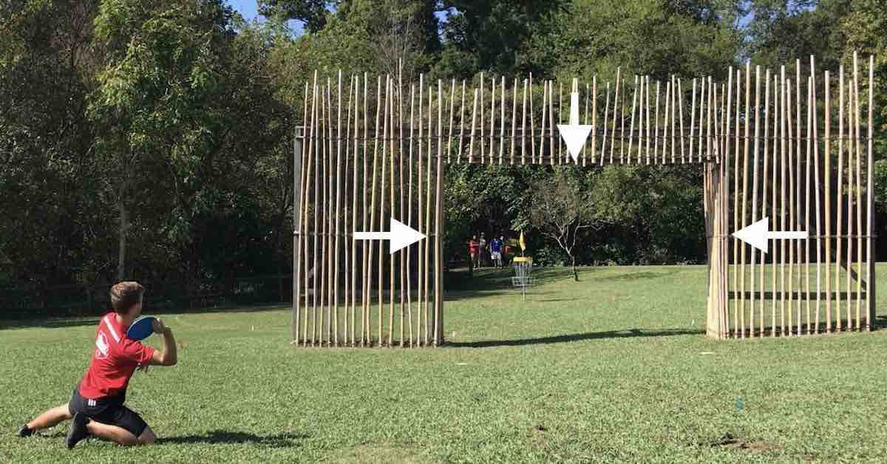

What Is Disc Golf?
Disc golf is a reletively young sport that has been around since the 1970s and has just started to get popular in the last couple of decades. Nowadays, everyone usually knows at least one person that plays, but there are still a lot of people that have never played. Disc golf is unique because it is a sport that nearly anyone can play. It doesn't have the physical limitations like some sports, and it can be played casually or competitively. Either way is very fun!
General Rules
Disc Golf consists of a course that is designed in an 18-hole layout. Meaning there are 18 “tee pads” and 18 baskets. A tee pad is the area in which you take your first throw, usually called a “drive” or “teeing off”. The end goal is getting the disc into the basket, so when taking your first throw, you want to get it as close to the basket at possible. A standard hole has a par of 3. Which means on average, the goal should be to get the disc into the basket in 3 throws. This is simply just a way of measuring your progress. When I first started, most of the holes I played were 1 or 2 throws over par. This isn't put into place so that one would feel discouraged after being over par, but essentially put into place so that you feel rewarded for when you do get par. And then as you progress, you can then aim to get under par.
Some things to consider in disc golf are rules like out of bounds, mandatory, and fairway throws.
Some holes within a course will have areas marked as “Out of Bounds” meaning that if your disc lands in this area, it is out of bounds. When this happens, you add an extra stroke to your score, and you move your disc to the area in which it crossed from inbounds to out of bounds. So, for example, if you teed off and the disc landed out of bounds, you would go get the disc and place it wherever it crossed the out of bounds line. Your next throw would be considered your 3rd throw. So, throw 1 was teeing off, and throw 2 was a penalty for going out of bounds.
A mandatory, or “Mando”, is a tree, pole, or another object that is mandatory to go past during the hole. In the example to the right, the Mando is to go through the inside square. More commonly, you will see a tree that has an arrow on it saying you need to throw to the side the arrow is pointing. If you throw it and it doesn't go through the Mando, you must re throw from where you just were. Adding the stroke that you just took.
A mandatory, or “Mando”, is a tree, pole, or another object that is mandatory to go past during the hole. In the example to the right, the Mando is to go through the inside square. More commonly, you will see a tree that has an arrow on it saying you need to throw to the side the arrow is pointing. If you throw it and it doesn't go through the Mando, you must re throw from where you just were. Adding the stroke that you just took.